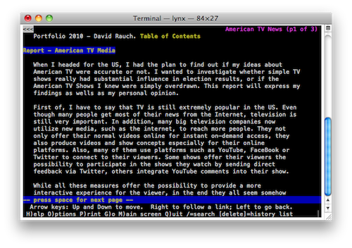

Introduction
Hey, let's make another e-Portfolio!
YEA!
Wait, I thought you didn't like them?
Yeah, you know...
I never disliked the idea of handing in a portfolio online. In fact, the less I have to fight with my printer, the happier I am. What I did not like was being limited to a platform such as mahara that limits creativity. However, an empty website is just like a piece of paper: You can do what you want.
And there is no other reason you created another e-portfolio?
Well, to be perfectly honest, there are other reasons. One of them is the environmental thought of saving paper, which leeds to less trees being felt, which leads to more happy koalas, ice bears, pink fluffy unicorns and rainbows. By the way: The following Video about pink fluffy unicorns dancing on rainbows is some serious brainwashing!
Another reason is that I now have a lot more experience in web development and design than I have in print. This means that I not only feel more comfortable working with web technologies, but I am actually much faster. So, yeah, laziness is a reason!
So what's the downside?
One of the biggest problems in web development is that you can never know which Browser the reader uses. So, when you want to reach a more viewers, you can not use new technologies, which might only be supported by newer browsers. I tried to make this website as accessible as possible - meaning that the texts and basic layouts are even viewable in Internet Explorer. In fact, here's a screenshot of this portfolio as it is rendered by Lynx, a non-graphical browser running on terminals without a GUI.

Pretty cool! Nevertheless, if you want to enjoy things such as Proxima Nova, the beautiful typeface I originally designed this website in, you should use a relatively new version of Safari, Chrome or Firefox.